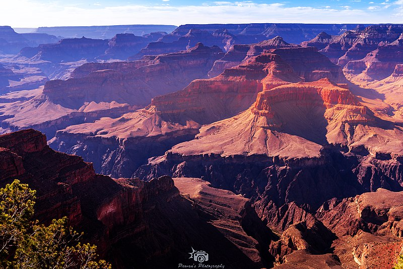
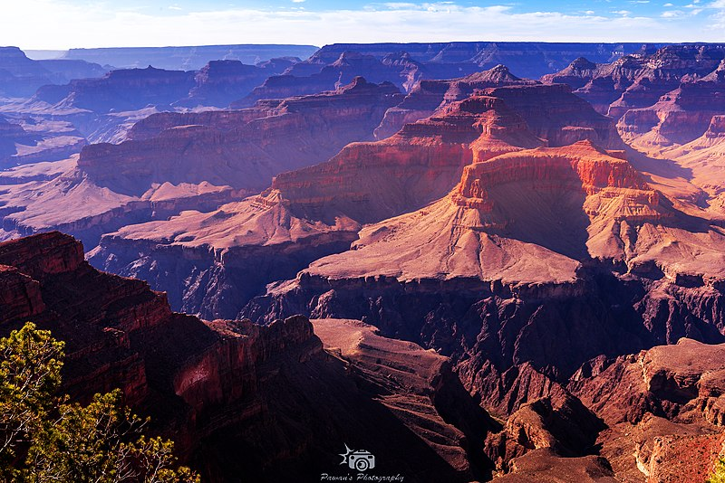

Travel
Destination: Grand Canyon
 

The Grand Canyon, a geological wonder located in the state of Arizona, USA, stands as one of the world's most awe-inspiring natural landscapes. Carved over millions of years by the relentless forces of the Colorado River, the Grand Canyon is a testament to the Earth's intricate geological history. Stretching approximately 277 miles (446 kilometers) long, up to 18 miles (29 kilometers) wide, and with depths reaching over a mile (1.6 kilometers), the canyon offers a breathtaking display of layered rock formations, each stratum representing a chapter in the planet's geological narrative.
The canyon's mesmerizing palette of colors, ranging from deep reds to soft yellows, changes dynamically with the shifting sunlight, creating a visual spectacle that captivates visitors. Beyond its stunning visual appeal, the Grand Canyon is a haven for biodiversity, hosting a diverse array of plant and animal life. The South Rim, a popular entry point for visitors, provides panoramic vistas and numerous hiking trails, while the North Rim offers a more secluded experience. Whether exploring its rim, embarking on a river rafting adventure, or simply standing at its precipice in quiet contemplation, the Grand Canyon is a testament to the sheer power and beauty of nature, inviting all who encounter it to marvel at its grandeur.